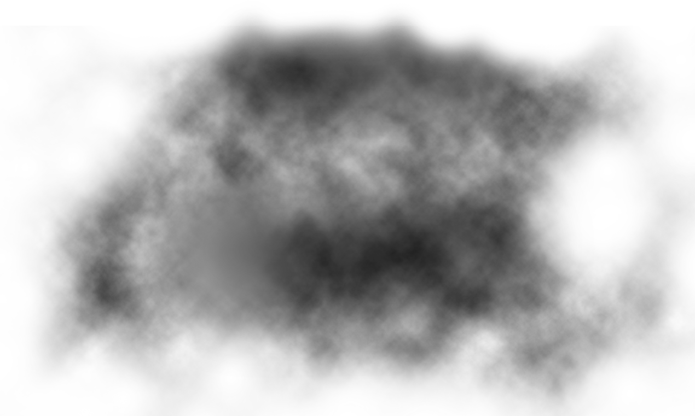

*breathes heavily*
Click the Circles
to wake Craig up from a nightmare
Craig, Are you Alright?

... ...
Craig has been experiencing nightmares for more than a month since the day an accident happened to him. He cries in sleep and the only way we could help him is to gently wake him up to comfort him to let him know that we are here for him... ...
50% individuals diagnosed with PTSD doesn't seek for help... ...
But you can determine PTSD and help seek professional help for them before it is too late... Follow us along in this website to understand more about PTSD.
Adults experience
1 traumatic event
Chidren develop
PTSD
develops PTSD after
a traumatic events
1 in 13 people develop PTSD at some point of their life...
Follow the steps below to help one determine if they have PTSD